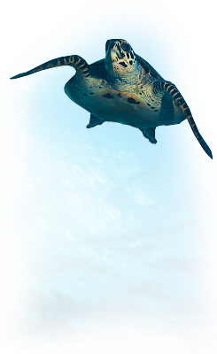
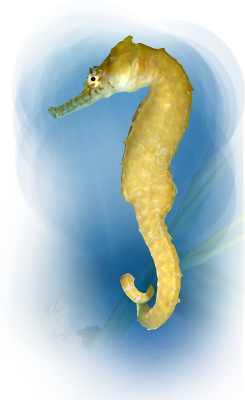

Bewohner im Sea Life Hannover
Grüne Meeresschildkröte
Die Grüne Meeresschildkröte genießt eine
weite Verbreitung und ist in den subtropischen
und tropischen Meeren des Pazifiks, Atlantiks
und Indischen Ozeans anzutreffen. Im Gegensatz
zu Fischen müssen Schildkröten an die Luft um
zu atmen. Eine bemerkenswerte Eigenschaft der
Schildkröten ist, dass die Weibchen Tausende
von Kilometern über die Weltmeere
schwimmen, um ihre Eier auf dem gleichen
Strand abzulegen, wo sie geboren wurden.
Seepferdchen
Woher kommt der Name Seepferdchen? Die
Seepferdchen heißen so, da ihr Kopf dem eines
Pferdes ähnelt.Sie sind Meister der Tarnung und
können sich ihrer natürlichen Umgebung
blitzschnell anpassen, um sich vor ihren
wenigen Fressfeinden zu verstecken.
Seepferdchen gehören zu den gefährdeten
Tiergattungen. Der Rückgang ihrer Population
liegt vor allem an der massiven Zerstörung ihrer
Lebensräume und der intensiven Befischung der
Gewässer, wodurch sie häufig als Beifang in den
Netzen landen.

